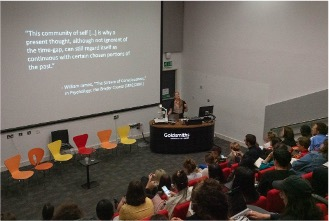
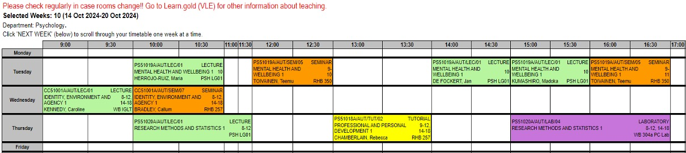
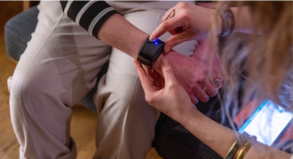
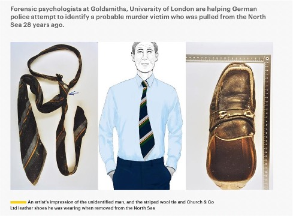
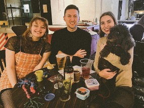

Psychology At Goldsmiths
Dr. Gordon Wright
Our new curriculum

Our new curriculum in 2024-25
Teaching themes that reflect you:
- Mental Health and Wellbeing
- Cognition and Culture
- Life and Society
Our new curriculum
Teaching themes that reflect you, plus:
- Research methods and statistics
- Professional and personal development
- Focus on applied and personal/real-world relevance of psychology
Mental Health & Wellbeing
- Clinical Psychology
- Developmental Psychology
- Education
- Forensic Psychology
- Positive Psychology
- Atypical Development
- Neurodiversity
Research and practice informed teaching
Mental Health and Wellbeing
- What does it mean to be happy?
- How does sleep affect our wellbeing?
- How do our thoughts influence our emotions?
Research and practice informed teaching
Mental Health and Wellbeing
- Make an individual wellbeing plan
- Experience how our beliefs influence our behaviours and emotions by taking part in a behavioural experiment
Cognition & Culture
- Perception
- Attention
- Memory
- Art
- Language
- Action
- Sport Psychology
- Cognitive Psychology
- Evolutionary Psychology
- Development
Research and practice informed teaching
Cognition and Culture
- Does living in an urban environment affect our attention?
- Do artists see the world in a different way?
- How does AI affect our sense of agency?
Research and practice informed teaching
Cognition and Culture
- Create a video explaining how to measure brain and behaviour to the public
- Write a reflective piece on what it would mean if free will was an illusion
Life & Society
- Developmental Science
- Educational Neuroscience
- Behavioural Genetics
- Individual differences
- Cross cultural Psychology
- Social Psychology
- Personality
- Relationships
- Media Psychology
- Evolutionary Psychology
- Political Psychology
Research and practice informed teaching

Life and Society
- Can music boost language acquisition?
- What are the ethical implications of genetic testing?
- What are psychological incentives and obstacles to social justice?
Research and practice informed teaching

Life and Society
- Write a policy brief on the importance of the First 1001 days of life
- Develop a research proposal investigating inter-group conflict management
Professional & Personal Development
- Learning how to learn
- Personal Tutoring
- Group Work preparing for assessments linked in with themes
Research Methods
- Learning how to code in R
- Participating in and running qualitative and quantitative research
- Journaling your progress week-by-week
What does teaching look like?
Example: Year 1 Term2, Life & Society: Growing Up
| Monday | Tuesday | Wednesday | Thursday | Friday |
|---|---|---|---|---|
| Independent study | Lecture: What is development? | Goldsmiths Connected Curriculum: Identity, environment and agency | Research Methods Lecture | Independent study |
| Developmental Cascades (seminar) | Seminar | PPD: Exploring careers that support children and families | ||
| Lecture: Infancy | Societies! | Research Methods Lab: Data Skills – Experimental Design | ||
| Seminar: First 1001 Days | Independent Study |
Timetable
Example weekly timetable
Curating your degree
- Year 1: Assessments tailored to your interests and experience
- Year 2: Group project work
- Year 3: Free choice of optional modules including:
Addictive Behaviours / Neuropsychology / Psychology of the Arts / Behavioural Genetics / Psychology and Law / Coding / Clinical Psychology / Neurodevelopmental Disorders / Psychology and Education / Cognitive Neuroscience
Year 3 projects
- Experiences of students with ASD in mainstream school
- The relationship between procrastination and wellbeing
- The role of music in advertising
- Perceptions of doping in competitive sport
- How line-ups affect eye-witness testimony
- Perceptions of stalking: when do behaviours cross the line?
Curating your degree
- Taking a stream subject: Clinical Psychology, Forensic Psychology, Cognitive Neuroscience
- Join a research lab (e.g, GoldAge, Forensic Unit, EquaLab, EEG, brain stimulation)
- Departmental research talks
- 4-year degree with placement in 3rd year: Staff support you to secure placements in clinical / social care / educational / forensic
Connected Curriculum and college-wide modules
Year 1: Identity, Environment and Agency
- Taught by lecturers from a range of departments
- Covers societally relevant topics such as AI, feminism, decolonising education
- You choose the assessment format: essay, video, music, poster, audio presentation
Connected Curriculum and college-wide modules
Year 2: two elective modules
- Choose modules from other Departments across college: sociology, anthropology, music, computing, therapeutic studies, management school etc
- You can also choose one or both of your electives from Psychology
Psychology at Goldsmiths
- All programmes are BPS accredited: first stepping stone for a career in psychology
- Campus-based learning: all sessions are on the same site student accommodation on or near campus
Psychology at Goldsmiths
- Research-active department:
- Staff are experts in their field
- Students get involved in running research
- Small cohort sizes: get to know fellow students and staff small-group and 1-to-1 teaching range of assessments individual feedback
Research-informed teaching
Research-informed teaching
Get involved in our research groups:
- Cognition and Neuroscience
- Developmental and Educational Science
- Forensic and Clinical Science
- Social Processes and Personality
- Science of the Creative and Performing Arts
Research facilities
- Neuroscience lab EEG / TMS / fNIRs
- Eye Tracking Lab
- Physiology
- Infant Lab
- Multimedia Lab
- Forensic lab interview observation cubicles

Research in society

Study environment
Study environment
Excellence in teaching and research
- THE World University Rankings 2023 Top 150 of Psychology departments worldwide
- Research Excellence Framework (REF) 2021 82% of our research rated world-leading / internationally excellent
- Institute for Fiscal Studies (IFS) 2021 1st in country for social mobility
- Goldsmiths student union teaching awards
Study environment
Varied teaching
- Lectures
- Tutorials and seminars
- Personal tutor sessions
- Lab classes
- One-to-one sessions
Varied assessment focused around skills for employability
Personal tutor throughout your studies
Study environment
Psychology society: film clubs, social events, study groups

Thank you
Psychology at Goldsmiths | Where science meets creativity